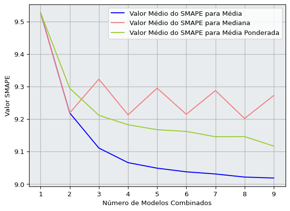
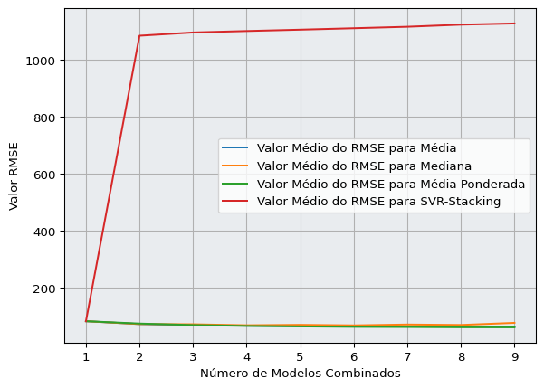
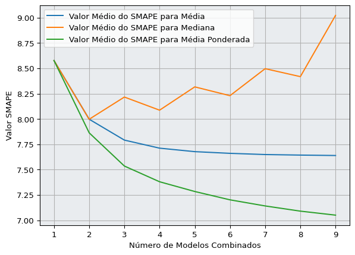

import pandas as pdimport numpy as npimport matplotlib.pyplot as pltfrom autorank import autorank, create_report, plot_statsfrom datasetsforecast.m3 import M3Y_df, _, _ = M3.load(directory="./data/monthly", group="Monthly")unique_ids = Y_df["unique_id"].unique()[:30]
1 Introdução
Este relatório é faz a análise prelimilinar dos dados obtidos com o sistema de treino e teste para os quatro combinadores de modelos para tarefas de previsão de séries temporais. O objetivo principal aqui é gerar tabelas e grásficos de agrupapamentos para, então, escrever anotações que serão usadas na escrita do artigo.
2 Primeiro Olhar aos Dados
Há três conjuntos de dados pós-execução do sistema: 2 arquivos de resultados de tipo csv paras as métricas RMSE e SMAPE, e 1 com todas as predições dos modelos e suas combinações. Abaixo as cinco primeiras linhas de cada conjunto de dados:
Tabela 3: All observations labeled as train, val, and test for all models and their combination for all time series
Ao todo foram 30 séries temporais mensais — período sasonal igual a 12 — as quais foram usadas na competição de forecasting M3. No obstante serem dados bastante conhecidos, usados benchmarking, não se sabe seus nomes, mas sim os contextos cujos os dados foram extraídos. São esses: finanças, economia, demografia, indústria e outros.
3 Diagrama do sistema de treino e teste
O sistema e cria combinações para cada operador começando com 2 métodos até 9 reunídos, o algoritmo Algorithm 1 abaixo descreve o processo:
A função combination dentro do algoritmo é um combinação para garantir que não haja repetições de ensembles, a equação a descreve:
\[
C_j^{9} = \frac{9!}{j!(9-j)!}
\]
flowchart TD
A((Start)) --> B[(Time Series)]
B --> C[Training Set]
B --> D[Test Set]
C --> E[Single Models]
E --> F[Combinations]
F --> D
D --> G[Evaluation]
G --> H((End))
Figura 1: Diagrama de Treino
4 Análise por Agrupamento (Group by)
4.1 Agrupamento por série e número de modelos
A Tabela 4 mostra um agrupamento das séries tratadas e do valor médio de RSME pela quantidade de modelos — até 9 modelos — nos ensembles para os quatro operadores analidados:
Tabela 4: Group of mean RMSE value for all time series e number of model in all ensembles.
Abaixo a Tabela 5 apresenta o agrupamento de séries por valor médio da métrica SMAPE pelo número de modelos combinados para os quatro operadores de combinação:
Tabela 5: Group of mean SMAPE value for all time series e number of model in all ensembles.
4.2 Série N1402, N1411, N1501, N2401 e N2402 &MACRO
Análise de dados das séries N1402 MICRO, N1411 MICRO, N1501 MICRO, N2401 MACRO e N2402 MACRO
4.2.1 N1402
4.2.1.1 Análise Geral dos Ensembles da Série N1402
Abaixo na figura Figura 2 a série da categoria micro N1402 com 68 observações, sendo que as 18 últimas são para teste. O gráfico a expõe com divisão para treino e teste.
Em relação a série histórica N1402 é claro o fato de que ensembles contribuem para maior acurácia, a partir dois modelos combinados os valores de RMSE e de SMAPE começam a cair. O destaque se dá aos combinadores média simples e média ponderada por features importance para as duas métricas que são superiores quando comparados à mediana e ao stacking. A média ponderada — para ambas métrica — cai mais rápido que os valores da média simples nos primeiros modelos combinados; quando analisada a métrica RMSE há uma aparente convergência de valores a partir de 6 modelos no ensemble, quando há estabilização dos resultados para a média ponderada. Já para a métrica SMAPE não há uma convergência aparente, mas uma correlação muito forte entre os valores, os quais pioram tanto para média aritmética quanto média ponderada na combinação de 9 métodos.
Tabela 7: Group of average SMAPE value for the M1 by number of model on ensemble.
Os melhores valores médios de RMSE para média aritmética e média ponderada são 1568,34 e 1563,56 respectivamente e com 9 métodos combinados para ambos. Com respeito à SMAPE os mehores valores médio acontecem quando há 8 modelos combinados para média aritmética, 64.902, e 62.914 para a média ponderada por features importance quando a combinação é composta por 7 modelos.
Código
fig1, ax1 = plt.subplots()ax1.plot(rmse_m1.index, rmse_m1['rmse_mean'].values, label='Valor Médio do RMSE para Média')ax1.plot(rmse_m1.index, rmse_m1['rmse_median'].values, label='Valor Médio do RMSE para Mediana')ax1.plot(rmse_m1.index, rmse_m1['rmse_fi_avg'].values, label='Valor Médio do RMSE para Média Ponderada')ax1.plot(rmse_m1.index, rmse_m1['rmse_stack_svr'].values, label='Valor Médio do RMSE para SVR-Stacking')ax1.grid()ax1.set_facecolor('#E9ECEF')ax1.set_xlabel('Número de Modelos Combinados')ax1.set_ylabel('Valor RMSE')ax1.legend()plt.show()fig2, ax2 = plt.subplots()ax2.plot(smape_m1.index, smape_m1['smape_mean'].values, label='Valor Médio do SMAPE para Média')ax2.plot(smape_m1.index, smape_m1['smape_median'].values, label='Valor Médio do SMAPE para Mediana')ax2.plot(smape_m1.index, smape_m1['smape_fi_avg'].values, label='Valor Médio do SMAPE para Média Ponderada')ax2.plot(smape_m1.index, smape_m1['smape_stack_svr'].values, label='Valor Médio do SMAPE para SVR-Stacking')ax2.grid()ax2.set_facecolor('#E9ECEF')ax2.set_xlabel('Número de Modelos Combinados')ax2.set_ylabel('Valor SMAPE')ax2.legend()plt.show()
(a) RMSE
(b) SMAPE
Figura 3: Average RMSE and SMAPE values for all combination operators used on N1402 series.
A mediana, que geralmente tem resultados melhores que a média simples, por ser mais robusta a distribuições assimétricas e outliers não foi tão bem, tendo seu melhor resultado com 4 modelos para a métrica RSME ficando com 1739.003, e piorando ao passo que o número de elementos aumenta. O valor médio da métrica SMAPE mais acurádo é 69.031 novamente para combinação de 4 modelos.
Já a técnica de stacking por SVR melhorou a acurácia quando comparada aos modelos individuais, mas parou de evoluir a partir de 6 métodos na combinação.
4.2.1.2 Análise dos melhores métodos da série N1402
Quando analisadas individuamente, a melhor combinação para para a série M1 é o STACKING de SVR. O valor de RMSE Tabela 8 dessa é 1293,006 e 1438,399 para a média ponderada por features importance, a segunda melhor. Usando o cálculo de percentual improvement\(Percentual Improvement = \frac{Error1 - Error2}{Error1} * 100\), temos que há uma melhoria de -10.108%. Já para a métrica SMAPE Tabela 9, o valor para Stack é 50,78 e 53,248 para média aritmética, houve uma melhoria percentual de acurácia de -4,621%.
Na série N1411, as combinações obtiveram resultados bons quando considerada a métrica RMSE (Tabela 10). Semelhante à série N1402, as combinações de média ponderada e média aritmética tiveram, em média, os melhores resultados. A média dos erros mais baixa para média simple é de 758,201 e se deu com 9 modelos combinados; já para a média ponderada, o valor médio do erro mais baixo foi 743,206 e ocorreu com 8 métodos combinados. O operador mediana foi mais acurado que svr-stacking, este manteve-se estável em performance a partir de 3 modelos, ou seja, sem melhorias ou pioras. Já mediana ocilou bastante crescendo e diminuindo o error ao passo que mais modelos foram acrescentados.
Tabela 10: Group of average RMSE value for the N1411 by number of model on ensemble.
Em relação a métrica SMAPE Tabela 11, o resultado foi muito semelhante à merica RMSE. Média aritmética e média ponderada obtiveram melhores resultados quanto mais modelos são acrescentados à combinação. A média ponderada for features importances conseguiu o melhor resultados médio com 8 métodos obtendo 14,35 de SMAPE médio, mas e voltou a crescer quando um modelo é adicionado. A média simples descresce o erro SMAPE médio quanto mais modelos são acrescentados, tendo seu erro médio mais baixo com nove métodos combinados. Os valores médios de SMAPE para svr-stacking também permaneceram estáveis ao número de 3 métodos e a mediana novamente com muita ocialação, mas conseguindo escore mais acurado quando comparada ao svr-stacking.
Tabela 11: Group of average SMAPE value for the N1411 by number of model on ensemble.
Código
fig1, ax1 = plt.subplots()ax1.plot(rmse_m10.index, rmse_m10['rmse_mean'].values, label='Valor Médio do RMSE para Média ')ax1.plot(rmse_m10.index, rmse_m10['rmse_median'].values, label='Valor Médio do RMSE para Mediana')ax1.plot(rmse_m10.index, rmse_m10['rmse_fi_avg'].values, label='Valor Médio do RMSE para Média Ponderada')ax1.plot(rmse_m10.index, rmse_m10['rmse_stack_svr'].values, label='Valor Médio do RMSE para SVR-Stacking')ax1.grid()ax1.set_facecolor('#E9ECEF')ax1.set_xlabel('Número de Modelos Combinados')ax1.set_ylabel('Valor RMSE')ax1.legend()plt.show()fig2, ax2 = plt.subplots()ax2.plot(smape_m10.index, smape_m10['smape_mean'].values, label='Valor Médio do SMAPE para Média')ax2.plot(smape_m10.index, smape_m10['smape_median'].values, label='Valor Médio do SMAPE para Mediana')ax2.plot(smape_m10.index, smape_m10['smape_fi_avg'].values, label='Valor Médio do SMAPE para Média Ponderada')ax2.plot(smape_m10.index, smape_m10['smape_stack_svr'].values, label='Valor Médio do SMAPE para SVR-Stacking')ax2.grid()ax2.set_facecolor('#E9ECEF')ax2.set_xlabel('Número de Modelos Combinados')ax2.set_ylabel('Valor SMAPE')ax2.legend()plt.show()
(a) RMSE
(b) SMAPE
Figura 5: Average RMSE and SMAPE values for all combination operators used on N1411 series.
4.2.2.2 Análise dos melhores métodos da série N1411
O melhor modelos dentre todos os individuais e todas as combinações foi o Random Forest, a exceção do combinador média ponderada por features importance na métrica RMSE, em todos os outros cenários quando comparado aos outras combinações o Random Forest sai-se melhor, tanto quando avalidado por RMSE quanto por SMAPE. É-se preciso destacar que tal modelos é um ensemble, porém uma forma homogência, i.e., são várias árvores de decisão que o compõem.
Para ambas as métricas Tabela 14 e Tabela 15, o destaque se deu ao mal desepenho do operador SVR-Stack. Em média, o valor RMSE e SMAPE piorou drasticamente já na primeira combinação com dois métodos indicando um possível overfitting; a partir de três métodos há uma estabilidade de do erro. A média dos valores RMSE dos modelos individuais é 619.75, já o valor RMSE médio do SVR-Stack com dois modelos usados é 1415.82, houve uma piora de 56.226%. Para para SMAPE, o valor médio modelos individuais é 9.52 e do SVR-Stack com dois métodos de 21.9, a piora foi de 56.53%.
Os graficos Figura 7 e Figura 7 ilustram a piora no operator. Para ambas métricas os gráficos são utilizados em escala logarítmica, no entato, dada a magnitude da média dos valores de error, ainda assim não é possível haver uma visualização clara das tendência. Sendo, então, necessária a retirada da projeção de erros do operador SVR-Stacking com o intuitito de exibir as curvas de média de erros dos demais operadores.
Tabela 14: Group of average RMSE value for the N1501 by number of model on ensemble.
Semelhante às outras séries, os resultados de média simples e média ponderada foram os mais acurádos, e quanto mais modelos são acrescentados, o valor do RMSE e SMAPE — em média — cai. A média ponderada por features importances ficando com o valor de 594.568 para a métrica RMSE e 9,116 para SMAPE.
Com relação à média simples, houve melhora contínua ao passo que mais modelos são acrescendados. Nota-se também que há uma lacuna acentuada entre as curvas, diferentemente das séries analisadas, indicando que a média ponderada conseguiu atriuir pesos significados aos métodos e consequentemente mais poder preditivo aos ensembles.
Tabela 15: Group of average SMAPE value for the N1501 by number of model on ensemble.
Código
fig, ax = plt.subplots()ax.plot(rmse_m100.index, rmse_m100['rmse_mean'].values, label='Valor Médio do RMSE para Média')ax.plot(rmse_m100.index, rmse_m100['rmse_median'].values, label='Valor Médio do RMSE para Mediana')ax.plot(rmse_m100.index, rmse_m100['rmse_fi_avg'].values, label='Valor Médio do RMSE para Média Ponderada')ax.plot(rmse_m100.index, rmse_m100['rmse_stack_svr'].values, label='Valor Médio do RMSE para SVR-Stacking')ax.grid()ax.set_facecolor('#E9ECEF')ax.set_xlabel('Número de Modelos Combinados')ax.set_ylabel('Valor RMSE')ax.legend()fig2, ax2 = plt.subplots()ax2.plot(rmse_m100.index, rmse_m100['rmse_mean'].values, label='Valor Médio do RMSE para Média',color='blue')ax2.plot(rmse_m100.index, rmse_m100['rmse_median'].values, label='Valor Médio do RMSE para Mediana', color='lightcoral')ax2.plot(rmse_m100.index, rmse_m100['rmse_fi_avg'].values, label='Valor Médio do RMSE para Média Ponderada', color='yellowgreen')ax2.grid()ax2.set_facecolor('#E9ECEF')ax2.set_xlabel('Número de Modelos Combinados')ax2.set_ylabel('Valor RMSE')ax2.legend()plt.show()#ax[1].set_title("Without SVR-Stacking")
(a) With SVR-Stacking
(b) Without SVR-Stacking
Figura 7: Average RMSE values for all combination operators used on N1501 series.
O operador mediana conseguiu resultados mais acuradas em ambas métricas quando comparados aos modelos individuais, houve ocilação ao passo que mais métodos são adicionados, mas com a clara tendência de queda, com os melhores valores médios para RMSE e SMAPE com ensemble de 8 modelos: RMSE igual a 596,75 e SMAPE igual a 9,20.
Código
fig, ax = plt.subplots()ax.plot(smape_m100.index, smape_m100['smape_mean'].values, label='Valor Médio do SMAPE para Média',color='blue')ax.plot(smape_m100.index, smape_m100['smape_median'].values, label='Valor Médio do SMAPE para Mediana', color='lightcoral')ax.plot(smape_m100.index, smape_m100['smape_fi_avg'].values, label='Valor Médio do SMAPE para Média Ponderada', color='yellowgreen')ax.plot(smape_m100.index, smape_m100['smape_stack_svr'].values, label='Valor Médio do SMAPE para SVR-Stacking', color='mediumvioletred')ax.grid()ax.set_facecolor('#E9ECEF')ax.set_xlabel('Número de Modelos Combinados')ax.set_ylabel('Valor SMAPE')ax.legend()plt.show()# sem stackfig2, ax2 = plt.subplots()ax2.plot(smape_m100.index, smape_m100['smape_mean'].values, label='Valor Médio do SMAPE para Média', color='blue')ax2.plot(smape_m100.index, smape_m100['smape_median'].values, label='Valor Médio do SMAPE para Mediana', color='lightcoral')ax2.plot(smape_m100.index, smape_m100['smape_fi_avg'].values, label='Valor Médio do SMAPE para Média Ponderada', color='yellowgreen')ax2.grid()ax2.set_facecolor('#E9ECEF')ax2.set_xlabel('Número de Modelos Combinados')ax2.set_ylabel('Valor SMAPE')ax2.legend()plt.show()
(a) With SVR-Stacking

(b) With SVR-Stacking (Log Scale)
Figura 8: Average SMAPE values for all combination operators used on M100 series.
4.2.3.2 Análise dos melhores métodos da série N1501
Em relação aos melhores métodos para a série N1501, para a métrica RMSE o melhor ensemble foi a mediana de KNN-SVR-TBATS com um resultado de 556.46. O resultado melhor para SMAPE foi de 8,18 novamente usando o combinador mediana, mas com os métodos KNN-SVR-ARIMA.
Os operadores média aritmética e média ponderada obtiveram resultados médios satisfatórios considerando que esses foram mais acurados que a média dos modelos individuais, tando quando considerada a métrica RMSE quanto SMAPE. A média simples baixou o erro RMSE até 4 métodos no ensemble, mas o valor médio do erro RMSE permaneceu estável aos acrescimos de métodos, ficando de 56,847 para 4 modelos até 56,29 para 9 modelos. Já para o valor médio SMAPE da média simples conseguiu evoluir quando comparada aos modelos individuais, mas de forma mais modesta estabilizando a queda do erro em 7 métodos.
A média ponderada conseguiu minimizar a média do valor de RMSE conforme mais métodos foram adicionados, tendo seu valor médio de RMSE com 9 métodos combinados no valor de 45,27, o que foi um ganho de redução de erro de 26.34%. A média ponderada também obteve desenpenho satisfatório na métrica SMAPE, seu melhor resultado foi 0.86 usando, novamente, 9 modelos em ensemble, tal resultados respresentou uma acrescimento percentual de 24,42%.
Tabela 19: Group of average SMAPE value for the N2401 by number of model on ensemble.
Código
fig, ax = plt.subplots()ax.plot(rmse_m1000.index, rmse_m1000['rmse_mean'].values, label='Valor Médio do RMSE para Média ')ax.plot(rmse_m1000.index, rmse_m1000['rmse_median'].values, label='Valor Médio do RMSE para Mediana')ax.plot(rmse_m1000.index, rmse_m1000['rmse_fi_avg'].values, label='Valor Médio do RMSE para Média Ponderada')ax.plot(rmse_m1000.index, rmse_m1000['rmse_stack_svr'].values, label='Valor Médio do RMSE para SVR-Stacking')ax.grid()ax.set_facecolor('#E9ECEF')ax.set_xlabel('Número de Modelos Combinados')ax.set_ylabel('Valor RMSE')ax.legend()plt.show()fig1, ax1 = plt.subplots()ax1.plot(rmse_m1000.index, rmse_m1000['rmse_mean'].values, label='Valor Médio do RMSE para Média ')ax1.plot(rmse_m1000.index, rmse_m1000['rmse_median'].values, label='Valor Médio do RMSE para Mediana')ax1.plot(rmse_m1000.index, rmse_m1000['rmse_fi_avg'].values, label='Valor Médio do RMSE para Média Ponderada')ax1.grid()ax1.set_facecolor('#E9ECEF')ax1.set_xlabel('Número de Modelos Combinados')ax1.set_ylabel('Valor RMSE')ax1.legend()plt.show()
(a) With SVR-Stacking
(b) Without SVR-Stacking
Figura 10: Average RMSE values for all combination operators used on N2401 series.
Código
fig, ax = plt.subplots()ax.plot(smape_m1000.index, smape_m1000['smape_mean'].values, label='Valor Médio do SMAPE para Média')ax.plot(smape_m1000.index, smape_m1000['smape_median'].values, label='Valor Médio do SMAPE para Mediana')ax.plot(smape_m1000.index, smape_m1000['smape_fi_avg'].values, label='Valor Médio do SMAPE para Média Ponderada')ax.plot(smape_m1000.index, smape_m1000['smape_stack_svr'].values, label='Valor Médio do SMAPE para SVR-Stacking')ax.grid()ax.set_facecolor('#E9ECEF')ax.set_xlabel('Número de Modelos Combinados')ax.set_ylabel('Valor SMAPE')ax.legend()plt.show()fig1, ax1 = plt.subplots()ax1.plot(smape_m1000.index, smape_m1000['smape_mean'].values, label='Valor Médio do SMAPE para Média')ax1.plot(smape_m1000.index, smape_m1000['smape_median'].values, label='Valor Médio do SMAPE para Mediana')ax1.plot(smape_m1000.index, smape_m1000['smape_fi_avg'].values, label='Valor Médio do SMAPE para Média Ponderada')ax1.grid()ax1.set_facecolor('#E9ECEF')ax1.set_xlabel('Número de Modelos Combinados')ax1.set_ylabel('Valor SMAPE')ax1.legend()plt.show()
(a) With SVR-Stacking
(b) Without SVR-Stacking
Figura 11: Average SMAPE values for all combination operators used on N2401 series.
O operador SVR-Stack mais uma vez não conseguiu performar para esta série, o valor médio melhor de RMSE e de SMAPE foi 587,052 e 13,44, respectivamente e suas pioras percentuais foram: 854,9% RMSE 1081.019% SMAPE. Fora decidido não usar a escala logarítma, pois esta nõ surtiu efeito em adequar a as medidas para que possibilitasse melhor visualização dos gráficos.
O operador mediana não conseguiu resultados superiores ao valor médio das métricas dos modelos individuais, ficando com erros acima desses. Com exceção da mediana de dois métodos, que é a média simples; pari passu ao acresciemento de métodos, o erro adicional crescia.
4.2.4.2 Análise dos melhores métodos da série N2401
O melhor modelo para as duas métrica foi o SVR. Seu valor de RMSE foi 24,071 e SMAPE 0,375. O que monstra que, semelhante a série N1411, que modelos individuais podem superar combinação. Para o caso da série M10 o melhor modelos foi o Random Forest, que é uma forma de combinação; o que não é caso do Supporte Vector Regressor.
Tabela 23: Group of average SMAPE value for the N2402 by number of model on ensemble.
Código
fig, ax = plt.subplots()ax.plot(rmse_m1001.index, rmse_m1001['rmse_mean'].values, label='Valor Médio do RMSE para Média ')ax.plot(rmse_m1001.index, rmse_m1001['rmse_median'].values, label='Valor Médio do RMSE para Mediana')ax.plot(rmse_m1001.index, rmse_m1001['rmse_fi_avg'].values, label='Valor Médio do RMSE para Média Ponderada')ax.plot(rmse_m1001.index, rmse_m1001['rmse_stack_svr'].values, label='Valor Médio do RMSE para SVR-Stacking')ax.grid()ax.set_facecolor('#E9ECEF')ax.set_xlabel('Número de Modelos Combinados')ax.set_ylabel('Valor RMSE')ax.legend()plt.show()fig1, ax1 = plt.subplots()ax1.plot(rmse_m1001.index, rmse_m1001['rmse_mean'].values, label='Valor Médio do RMSE para Média ')ax1.plot(rmse_m1001.index, rmse_m1001['rmse_median'].values, label='Valor Médio do RMSE para Mediana')ax1.plot(rmse_m1001.index, rmse_m1001['rmse_fi_avg'].values, label='Valor Médio do RMSE para Média Ponderada')ax1.grid()ax1.set_facecolor('#E9ECEF')ax1.set_xlabel('Número de Modelos Combinados')ax1.set_ylabel('Valor RMSE')ax1.legend()plt.show()

(a) With SVR-Stacking
(b) Without SVR-Stacking
Figura 13: Average RMSE values for all combination operators used on N2402 series.
A série temporal N2402 é monstrado novamente a dificuldade de generalizar do operador SVR-Stack. Mais uma vez obteve os piores resultados com uma piora de 1201.36% em relação à média do valor RMSE do modelos individuais. A piora percentual pela métrica SMAPE é de 1721.57%.
Analisando individualmente 5 séries seguidas de período sasonal 12 e por previsão one-step ahead forecasting, há indicatívos de não adequação da técnica Stack com meta-modelo SVR para prevêr séries com tais características. É preciso ainda mais estudos individuais e geral com esse operador de combinação para ter melhores evidência se tal combinador é vantajoso para previsão nesse contexto.
Os demais combinadores comportaram-se de modo semelhante aos casos anteriores analisados. A média ponderada obtese os melhores resultados, seguida da média simples e da mediana.
Código
fig, ax = plt.subplots()ax.plot(smape_m1001.index, smape_m1001['smape_mean'].values, label='Valor Médio do SMAPE para Média')ax.plot(smape_m1001.index, smape_m1001['smape_median'].values, label='Valor Médio do SMAPE para Mediana')ax.plot(smape_m1001.index, smape_m1001['smape_fi_avg'].values, label='Valor Médio do SMAPE para Média Ponderada')ax.plot(smape_m1001.index, smape_m1001['smape_stack_svr'].values, label='Valor Médio do SMAPE para SVR-Stacking')ax.grid()ax.set_facecolor('#E9ECEF')ax.set_xlabel('Número de Modelos Combinados')ax.set_ylabel('Valor SMAPE')ax.legend()plt.show()fig1, ax1 = plt.subplots()ax1.plot(smape_m1001.index, smape_m1001['smape_mean'].values, label='Valor Médio do SMAPE para Média')ax1.plot(smape_m1001.index, smape_m1001['smape_median'].values, label='Valor Médio do SMAPE para Mediana')ax1.plot(smape_m1001.index, smape_m1001['smape_fi_avg'].values, label='Valor Médio do SMAPE para Média Ponderada')ax1.grid()ax1.set_facecolor('#E9ECEF')ax1.set_xlabel('Número de Modelos Combinados')ax1.set_ylabel('Valor SMAPE')ax1.legend()plt.show()
(a) With SVR-Stacking
(b) Without SVR-Stacking
Figura 14: Average SMAPE values for all combination operators used on N2402 series.
4.2.5.2 Análise dos melhores métodos da série N2402
Tabela 25: The Best models for N2402 series for SMAPE metric
O modelos modelo para a série M1001 foi a combinação por mediana dos modelos MLP-SVR-ARIMA com o RMSE de 41.85 e mediana de MLP-SVR-CES com resultado de 0.4802.
4.3 Agrupamento do número de modelos, independente da série, por valor RMSE e SMAPE
4.3.1 Análise Geral
Quandos os dados são agrupados para o valor médio do error para a quantidade de modelos combinados (independente das séries histórias), vê-se claramente que média e média ponderada conseguem se sobrepôr aos outros dois combinadores. Stacking, usando meta-modelo o não-linear SVR, piora drasticamente já com dois métodos empilhados quando compara-se aos valores dos modelos individuais e segue até a quantidade 6 de métodos e se estabiliza. Já a mediana tem seu melhor valor com dois métodos no ensemble, o que é a mesma coisa da média aritmética, e ocila piorando levemente.
fig, ax = plt.subplots()ax.plot(rmse_group.index, rmse_group['rmse_mean'].values, label='Valor Médio do RMSE para Média ')ax.plot(rmse_group.index, rmse_group['rmse_median'].values, label='Valor Médio do RMSE para Mediana')ax.plot(rmse_group.index, rmse_group['rmse_fi_avg'].values, label='Valor Médio do RMSE para Média Ponderada')ax.plot(rmse_group.index, rmse_group['rmse_stack_svr'].values, label='Valor Médio do RMSE para SVR-Stacking')ax.grid()ax.set_facecolor('#E9ECEF')ax.set_xlabel('Número de Modelos Combinados')ax.set_ylabel('Valor RMSE')ax.legend()plt.show()fig1, ax1 = plt.subplots()ax1.plot(rmse_group.index, rmse_group['rmse_mean'].values, label='Valor Médio do RMSE para Média ')ax1.plot(rmse_group.index, rmse_group['rmse_median'].values, label='Valor Médio do RMSE para Mediana')ax1.plot(rmse_group.index, rmse_group['rmse_fi_avg'].values, label='Valor Médio do RMSE para Média Ponderada')ax1.grid()ax1.set_facecolor('#E9ECEF')ax1.set_xlabel('Número de Modelos Combinados')ax1.set_ylabel('Valor RMSE')ax1.legend()plt.show()
(a) With SVR-Stacking
(b) Without SVR-Stacking
Figura 15: Mean RMSE value for all combination operators by number of models in ensemble
Código
fig, ax = plt.subplots()ax.plot(smape_group.index, smape_group['smape_mean'].values, label='Valor Médio do SMAPE para Média')ax.plot(smape_group.index, smape_group['smape_median'].values, label='Valor Médio do SMAPE para Mediana')ax.plot(smape_group.index, smape_group['smape_fi_avg'].values, label='Valor Médio do SMAPE para Média Ponderada')ax.plot(smape_group.index, smape_group['smape_stack_svr'].values, label='Valor Médio do SMAPE para SVR-Stacking')ax.grid()ax.set_facecolor('#E9ECEF')ax.set_xlabel('Número de Modelos Combinados')ax.set_ylabel('Valor SMAPE')ax.legend()plt.show()fig1, ax1 = plt.subplots()ax1.plot(smape_group.index, smape_group['smape_mean'].values, label='Valor Médio do SMAPE para Média')ax1.plot(smape_group.index, smape_group['smape_median'].values, label='Valor Médio do SMAPE para Mediana')ax1.plot(smape_group.index, smape_group['smape_fi_avg'].values, label='Valor Médio do SMAPE para Média Ponderada')ax1.grid()ax1.set_facecolor('#E9ECEF')ax1.set_xlabel('Número de Modelos Combinados')ax1.set_ylabel('Valor SMAPE')ax1.legend()plt.show()
(a) With SVR-Stacking

(b) Without SVR-Stacking
Figura 16: Mean SMAPE value for all combination operators by number of models in ensemble
Figura 20: Boxplot for mean SMAPE value of mean, weigthed mean and median.
Código
fig, ax = plt.subplots(ncols=2, nrows=2, layout='constrained')ax[0,0].boxplot(rmse_group['rmse_mean'].values, patch_artist=True) ax[0,0].set_facecolor('#E9ECEF')ax[0,0].set_title('RMSE médio da Média')ax[0,1].boxplot(rmse_group['rmse_median'].values, patch_artist=True) ax[0,1].set_facecolor('#E9ECEF')ax[0,1].set_title('RMSE médio da Mediana')ax[1,0].boxplot(rmse_group['rmse_fi_avg'].values, patch_artist=True) ax[1,0].set_facecolor('#E9ECEF')ax[1,0].set_title('RMSE médio da Média Ponderada')ax[1,1].boxplot(rmse_group['rmse_stack_svr'].values, patch_artist=True) ax[1,1].set_facecolor('#E9ECEF')ax[1,1].set_title('RMSE médio do Stacking')plt.show()
Figura 21: Box plot separados para o RMSE médio dos quatro combinadores para todas séries
4.3.3 Análise de Dispersão
Uma caracteristica importante que se detecta usando os gráficos Figura 22 e Figura 23 é que quanto mais modelos são adicionados à combinação, o desvio padrão dos valores médios dos error RMSE e SMAPE caem. Variância e desvio padrão são métricas de dispersão que indicam certa robustês nos dos modelos; usando a analogia do alvo e dos dardos, modelos que baixa variância/desvio padrão tendem a acertar mais num ponto.
Modelos com dispersão menor têm menor incerteza para acerto, o que torna o desvio padrão uma métrica importantíssima para setores como finanças. E ao que os dados indicam que para séries temporais mensais há a tendência de diminuição do desvio padrão ao passo que mais modelos são adicionados.
fig, ax = plt.subplots()ax.set_facecolor('#E9ECEF')ax.grid()ax.plot(rmse_group_std.index, rmse_group_std['rmse_mean'].values, label='Desvio Padrão do RMSE para Média')ax.plot(rmse_group_std.index, rmse_group_std['rmse_median'].values, label='Desvio Padrão do RMSE para Mediana')ax.plot(rmse_group_std.index, rmse_group_std['rmse_fi_avg'].values, label='Desvio Padrão do RMSE para Média Ponderada')ax.plot(rmse_group_std.index, rmse_group_std['rmse_stack_svr'].values, label='Desvio Padrão do RMSE para SVR-Stacking')ax.set_xlabel('Número de Modelos')ax.set_ylabel('Desvio Padrão RMSE')ax.legend()plt.show()
Figura 22: Desvio Padrão do RMSE para os quatro operadores de combinação
fig, ax = plt.subplots()ax.set_facecolor('#E9ECEF')ax.grid()ax.plot(smape_group_std.index, smape_group_std['smape_mean'].values, label='Desvio Padrão SMAPE para Média')ax.plot(smape_group_std.index, smape_group_std['smape_median'].values, label='Desvio Padrão do SMAPE para Mediana')ax.plot(smape_group_std.index, smape_group_std['smape_fi_avg'].values, label='Desvio Padrão do SMAPE para Média Ponderada')ax.plot(smape_group_std.index, smape_group_std['smape_stack_svr'].values, label='Desvio Padrão do SMAPE para SVR-Stacking')ax.set_xlabel('Número de Modelos')ax.set_ylabel('Desvio Padrão SMAPE')ax.legend()plt.show()
Figura 23: Desvio Padrão do SMAPE para os quatro operadores de combinação
Após o teste de Friedman — o qual verifica se há diferenças entre os métodos — com significância de 5%, foi possível rejeitar a hipótese nula para ambas métricas, o post hoc de Nemenyi idenficou o nível de diferença entre as populações, baseda na distância crítica CD de 0.303 para a meétrics RMSE e SMAPE, há evidências que corroboboram com a afirmação de que método WAFI é mais acurado que os demais. Os gráficos Figura 24 mostram o ranking dos modelos.
The statistical analysis was conducted for 4 populations with 240 paired samples.
The family-wise significance level of the tests is alpha=0.050.
We rejected the null hypothesis that the population is normal for the populations Média Ponderada (p=0.000), Média Simples (p=0.000), Mediana (p=0.000), and SVR-Stacking (p=0.000). Therefore, we assume that not all populations are normal.
Because we have more than two populations and the populations and some of them are not normal, we use the non-parametric Friedman test as omnibus test to determine if there are any significant differences between the median values of the populations. We use the post-hoc Nemenyi test to infer which differences are significant. We report the median (MD), the median absolute deviation (MAD) and the mean rank (MR) among all populations over the samples. Differences between populations are significant, if the difference of the mean rank is greater than the critical distance CD=0.303 of the Nemenyi test.
We reject the null hypothesis (p=0.000) of the Friedman test that there is no difference in the central tendency of the populations Média Ponderada (MD=286.990+-112.242, MAD=184.995, MR=1.271), Média Simples (MD=309.483+-109.748, MAD=197.078, MR=2.050), Mediana (MD=330.860+-109.185, MAD=210.527, MR=2.921), and SVR-Stacking (MD=860.793+-78.968, MAD=225.180, MR=3.758). Therefore, we assume that there is a statistically significant difference between the median values of the populations.
Based on the post-hoc Nemenyi test, we assume that all differences between the populations are significant.
None
Código
print(create_report(smape_result))
The statistical analysis was conducted for 4 populations with 240 paired samples.
The family-wise significance level of the tests is alpha=0.050.
We rejected the null hypothesis that the population is normal for the populations Média Ponderada (p=0.000), Média Simples (p=0.000), Mediana (p=0.000), and SVR Stacking (p=0.000). Therefore, we assume that not all populations are normal.
Because we have more than two populations and the populations and some of them are not normal, we use the non-parametric Friedman test as omnibus test to determine if there are any significant differences between the median values of the populations. We use the post-hoc Nemenyi test to infer which differences are significant. We report the median (MD), the median absolute deviation (MAD) and the mean rank (MR) among all populations over the samples. Differences between populations are significant, if the difference of the mean rank is greater than the critical distance CD=0.303 of the Nemenyi test.
We reject the null hypothesis (p=0.000) of the Friedman test that there is no difference in the central tendency of the populations Média Ponderada (MD=3.983+-1.339, MAD=2.722, MR=1.238), Média Simples (MD=4.228+-1.399, MAD=3.002, MR=2.096), Mediana (MD=4.744+-2.013, MAD=3.330, MR=2.908), and SVR Stacking (MD=15.524+-1.214, MAD=2.987, MR=3.758). Therefore, we assume that there is a statistically significant difference between the median values of the populations.
Based on the post-hoc Nemenyi test, we assume that all differences between the populations are significant.
None
Figura 24: Diagramas de Distância Crítica para as métricas RMSE e SMAPE
Código fonte
---title: "Análise de Dados dos combinatores Média, Mediana, SVR-Stack e Média Ponderada por *Features Importance*"lang: ptauthor: - name: Rodolfo Viegas de Albuquerque affiliations: Universidade de Pernambuco - name: Prof. Dr. João Fausto Lorenzato de Oliveira affiliations: Universidade de Pernambucodate: '04/10/2025'toc: truenumber-sections: trueformat: html: page-layout: article code-fold: true code-tools: truejupyter: python3filters: - pseudocode---<style>p {text-indent:30px;text-align:justify}</style>```{python}#| warning: falseimport pandas as pdimport numpy as npimport matplotlib.pyplot as pltfrom autorank import autorank, create_report, plot_statsfrom datasetsforecast.m3 import M3Y_df, _, _ = M3.load(directory="./data/monthly", group="Monthly")unique_ids = Y_df["unique_id"].unique()[:30]```## IntroduçãoEste relatório é faz a análise prelimilinar dos dados obtidos com o sistema de treino e teste para os quatro combinadores de modelos para tarefas de previsão de séries temporais. O objetivo principal aqui é gerar tabelas e grásficos de agrupapamentos para, então, escrever anotações que serão usadas na escrita do artigo.## Primeiro Olhar aos DadosHá três conjuntos de dados pós-execução do sistema: 2 arquivos de resultados de tipo csv paras as métricas RMSE e SMAPE, e 1 com todas as predições dos modelos e suas combinações. Abaixo as cinco primeiras linhas de cada conjunto de dados:```{python}#| label: tbl-rmse#| tbl-cap: "All RMSE values for all models and their combination for all time series" #| tbl-cap-location: bottomrmse = pd.read_csv('./monthly_model_sensitivity_rmse_results.csv')#'/home/rodolfoviegas/projetos/analise_sensibilidade_fi/analise_sensi/data/monthly_model_sensitivity_rmse_results.csv'rmse.head()``````{python}#| label: tbl-smape#| tbl-cap: "All SMAPE values for all models and their combination for all time series" #| tbl-cap-location: bottomsmape = pd.read_csv('./monthly_model_sensitivity_smape_results.csv')smape.head()``````{python}#| label: tbl-observations#| tbl-cap: "All observations labeled as train, val, and test for all models and their combination for all time series" #| tbl-cap-location: bottompreds = pd.read_excel('./monthly_model_predictions.xlsx')preds.head()```Ao todo foram 30 séries temporais mensais --- período sasonal igual a 12 --- as quais foram usadas na competição de *forecasting* M3. No obstante serem dados bastante conhecidos, usados *benchmarking*, não se sabe seus nomes, mas sim os contextos cujos os dados foram extraídos. São esses: finanças, economia, demografia, indústria e outros.## Diagrama do sistema de treino e testeO sistema e cria combinações para cada operador começando com 2 métodos até 9 reunídos, o algoritmo @alg-comb abaixo descreve o processo:```pseudocode#| label: alg-comb#| html-indent-size: "1.2em"#| html-comment-delimiter: "//"#| html-line-number: true#| html-line-number-punc: ":"#| html-no-end: false#| pdf-placement: "htb!"#| pdf-line-number: true\begin{algorithm} \caption{Combinations} \begin{algorithmic}[1] \For{$i \gets 1$ to $30$} \State $ Predictions \gets Training(Statiscal Models, Y_{train}^{i})$ \State $Predictions \gets Training(ML Models, Y_{train}^{i})$ \For{$j \gets 9$ to $2$} \State $Combinations \gets C_j^{9}$ \State $Operators(Combinations, Predictions)$ \EndFor \EndFor \end{algorithmic} \end{algorithm}```A função *combination* dentro do algoritmo é um combinação para garantir que não haja repetições de *ensembles*, a equação a descreve:$$C_j^{9} = \frac{9!}{j!(9-j)!}$$```{mermaid}%%| label: fig-diagrama%%| fig-cap: Diagrama de Treinoflowchart TD A((Start)) --> B[(Time Series)] B --> C[Training Set] B --> D[Test Set] C --> E[Single Models] E --> F[Combinations] F --> D D --> G[Evaluation] G --> H((End))```## Análise por Agrupamento (Group by)### Agrupamento por série e número de modelosA @tbl-agg_rmse_mean mostra um agrupamento das séries tratadas e do valor médio de RSME pela quantidade de modelos --- até 9 modelos --- nos *ensembles* para os quatro operadores analidados:```{python}#| label: tbl-agg_rmse_mean#| tbl-cap: "Group of mean RMSE value for all time series e number of model in all ensembles."#| tbl-cap-location: bottommean_rmse_series_models = rmse.groupby(['dataset','n_models'])[['rmse_mean','rmse_median','rmse_fi_avg','rmse_stack_svr']].mean()mean_rmse_series_models.head(18)```Abaixo a @tbl-agg_smape_mean apresenta o agrupamento de séries por valor médio da métrica SMAPE pelo número de modelos combinados para os quatro operadores de combinação:```{python}#| label: tbl-agg_smape_mean#| tbl-cap: "Group of mean SMAPE value for all time series e number of model in all ensembles."#| tbl-cap-location: bottommean_smape_series_models = smape.groupby(['dataset','n_models'])[['smape_mean','smape_median','smape_fi_avg','smape_stack_svr']].mean()mean_smape_series_models.head(18)```### Série N1402, N1411, N1501, N2401 e N2402 &MACROAnálise de dados das séries N1402 MICRO, N1411 MICRO, N1501 MICRO, N2401 MACRO e N2402 MACRO#### N1402##### Análise Geral dos *Ensembles* da Série N1402Abaixo na figura @fig-n1402-series a série da categoria micro N1402 com 68 observações, sendo que as 18 últimas são para teste. O gráfico a expõe com divisão para treino e teste.```{python}#| fig-cap: "N1402 MICRO Time Series"#| fig-cap-location: bottom#| label: fig-n1402-seriesm1 = Y_df[Y_df["unique_id"] =='M1']fig, ax = plt.subplots()ax.plot(m1.ds[:-18], m1.y[:-18].values, label='Treino')ax.plot(m1.ds[-18:], m1.y[-18:].values, label='Teste')ax.grid()ax.set_facecolor('#E9ECEF')ax.legend()plt.show()```Em relação a série histórica N1402 é claro o fato de que *ensembles* contribuem para maior acurácia, a partir dois modelos combinados os valores de RMSE e de SMAPE começam a cair. O destaque se dá aos combinadores média simples e média ponderada por *features importance* para as duas métricas que são superiores quando comparados à mediana e ao stacking. A média ponderada --- para ambas métrica --- cai mais rápido que os valores da média simples nos primeiros modelos combinados; quando analisada a métrica RMSE há uma aparente convergência de valores a partir de 6 modelos no *ensemble*, quando há estabilização dos resultados para a média ponderada. Já para a métrica SMAPE não há uma convergência aparente, mas uma correlação muito forte entre os valores, os quais pioram tanto para média aritmética quanto média ponderada na combinação de 9 métodos.```{python}#| label: tbl-rmse_mean_n1402#| tbl-cap: "Group of average RMSE value for the M1 by number of model on ensemble."#| tbl-cap-location: bottomrmse_m1 = mean_rmse_series_models.loc['M1',:]rmse_m1``````{python}#| label: tbl-smape_mean_n1402#| tbl-cap: "Group of average SMAPE value for the M1 by number of model on ensemble."#| tbl-cap-location: bottomsmape_m1 = mean_smape_series_models.loc['M1',:]smape_m1```Os melhores valores médios de RMSE para média aritmética e média ponderada são 1568,34 e 1563,56 respectivamente e com 9 métodos combinados para ambos. Com respeito à SMAPE os mehores valores médio acontecem quando há 8 modelos combinados para média aritmética, 64.902, e 62.914 para a média ponderada por *features importance* quando a combinação é composta por 7 modelos.```{python}#| label: fig-n1402#| fig-cap: "Average RMSE and SMAPE values for all combination operators used on N1402 series."#| fig-subcap: #| - "RMSE"#| - "SMAPE"fig1, ax1 = plt.subplots()ax1.plot(rmse_m1.index, rmse_m1['rmse_mean'].values, label='Valor Médio do RMSE para Média')ax1.plot(rmse_m1.index, rmse_m1['rmse_median'].values, label='Valor Médio do RMSE para Mediana')ax1.plot(rmse_m1.index, rmse_m1['rmse_fi_avg'].values, label='Valor Médio do RMSE para Média Ponderada')ax1.plot(rmse_m1.index, rmse_m1['rmse_stack_svr'].values, label='Valor Médio do RMSE para SVR-Stacking')ax1.grid()ax1.set_facecolor('#E9ECEF')ax1.set_xlabel('Número de Modelos Combinados')ax1.set_ylabel('Valor RMSE')ax1.legend()plt.show()fig2, ax2 = plt.subplots()ax2.plot(smape_m1.index, smape_m1['smape_mean'].values, label='Valor Médio do SMAPE para Média')ax2.plot(smape_m1.index, smape_m1['smape_median'].values, label='Valor Médio do SMAPE para Mediana')ax2.plot(smape_m1.index, smape_m1['smape_fi_avg'].values, label='Valor Médio do SMAPE para Média Ponderada')ax2.plot(smape_m1.index, smape_m1['smape_stack_svr'].values, label='Valor Médio do SMAPE para SVR-Stacking')ax2.grid()ax2.set_facecolor('#E9ECEF')ax2.set_xlabel('Número de Modelos Combinados')ax2.set_ylabel('Valor SMAPE')ax2.legend()plt.show()```A mediana, que geralmente tem resultados melhores que a média simples, por ser mais robusta a distribuições assimétricas e *outliers* não foi tão bem, tendo seu melhor resultado com 4 modelos para a métrica RSME ficando com 1739.003, e piorando ao passo que o número de elementos aumenta. O valor médio da métrica SMAPE mais acurádo é 69.031 novamente para combinação de 4 modelos.Já a técnica de stacking por SVR melhorou a acurácia quando comparada aos modelos individuais, mas parou de evoluir a partir de 6 métodos na combinação.##### Análise dos melhores métodos da série N1402Quando analisadas individuamente, a melhor combinação para para a série M1 é o STACKING de SVR. O valor de RMSE @tbl-best_model_n1402_rmse dessa é 1293,006 e 1438,399 para a média ponderada por *features importance*, a segunda melhor. Usando o cálculo de *percentual improvement* $Percentual Improvement = \frac{Error1 - Error2}{Error1} * 100$, temos que há uma melhoria de -10.108%. Já para a métrica SMAPE @tbl-best_model_n1402_smape, o valor para Stack é 50,78 e 53,248 para média aritmética, houve uma melhoria percentual de acurácia de -4,621%.```{python}#| label: tbl-best_model_n1402_rmse#| tbl-cap: 'The Best models for M1 series for RMSE metric'#| tbl-cap-location: bottommean=rmse[rmse['dataset'] =='M1'][['models_used','rmse_mean']].sort_values(by='rmse_mean').iloc[0,:].valuesmedian=rmse[rmse['dataset'] =='M1'][['models_used','rmse_median']].sort_values(by='rmse_median').iloc[0,:].valuesfi_avg=rmse[rmse['dataset'] =='M1'][['models_used','rmse_fi_avg']].sort_values(by='rmse_fi_avg').iloc[0,:].valuesstack=rmse[rmse['dataset'] =='M1'][['models_used','rmse_stack_svr']].sort_values(by='rmse_stack_svr').iloc[0,:].valuesmean[0] =' '.join(mean[0].upper().split('_'))median[0] =' '.join(median[0].upper().split('_'))fi_avg[0] =' '.join(fi_avg[0].upper().split('_'))stack[0] =' '.join(stack[0].upper().split('_'))best_models_rmse = pd.DataFrame({"Mean":mean, "Median":median,"FI weigthed AVG":fi_avg, "Stack SVR":stack})best_models_rmse``````{python}#| label: tbl-best_model_n1402_smape#| tbl-cap: 'The Best models for N1402 series for SMAPE metric'#| tbl-cap-location: bottommean = smape[smape['dataset'] =='M1'][['models_used','smape_mean']].sort_values(by='smape_mean').iloc[0,:].valuesmedian = smape[smape['dataset'] =='M1'][['models_used','smape_median']].sort_values(by='smape_median').iloc[0,:].valuesfi_avg = smape[smape['dataset'] =='M1'][['models_used','smape_fi_avg']].sort_values(by='smape_fi_avg').iloc[0,:].valuesstack = smape[smape['dataset'] =='M1'][['models_used','smape_stack_svr']].sort_values(by='smape_stack_svr').iloc[0,:].valuesmean[0] =' '.join(mean[0].upper().split('_'))median[0] =' '.join(median[0].upper().split('_'))fi_avg[0] =' '.join(fi_avg[0].upper().split('_'))stack[0] =' '.join(stack[0].upper().split('_'))best_models_smape = pd.DataFrame({"Mean":mean, "Median":median,"FI weigthed AVG":fi_avg, "Stack SVR":stack})best_models_smape```#### N1411##### Análise Geral dos *Ensembles* da Série N1411Na figura @fig-n1411-series a série MICRO N1411 dividida em dois conjuntos de treino e de teste.```{python}#| fig-cap: "N1411 MICRO Time Series"#| fig-cap-location: bottom#| label: fig-n1411-seriesm10 = Y_df[Y_df["unique_id"] =='M10']fig, ax = plt.subplots()ax.plot(m10.ds[:-18], m10.y[:-18].values, label='Treino')ax.plot(m10.ds[-18:], m10.y[-18:].values, label='Teste')ax.grid()ax.set_facecolor('#E9ECEF')ax.legend()plt.show()```Na série N1411, as combinações obtiveram resultados bons quando considerada a métrica RMSE (@tbl-rmse_mean_n1411). Semelhante à série N1402, as combinações de média ponderada e média aritmética tiveram, em média, os melhores resultados. A média dos erros mais baixa para média simple é de 758,201 e se deu com 9 modelos combinados; já para a média ponderada, o valor médio do erro mais baixo foi 743,206 e ocorreu com 8 métodos combinados. O operador mediana foi mais acurado que svr-stacking, este manteve-se estável em performance a partir de 3 modelos, ou seja, sem melhorias ou pioras. Já mediana ocilou bastante crescendo e diminuindo o error ao passo que mais modelos foram acrescentados.```{python}#| label: tbl-rmse_mean_n1411#| tbl-cap: "Group of average RMSE value for the N1411 by number of model on ensemble."#| tbl-cap-location: bottomrmse_m10 = mean_rmse_series_models.loc['M10',:]rmse_m10```Em relação a métrica SMAPE @tbl-smape_mean_n1411, o resultado foi muito semelhante à merica RMSE. Média aritmética e média ponderada obtiveram melhores resultados quanto mais modelos são acrescentados à combinação. A média ponderada for *features importances* conseguiu o melhor resultados médio com 8 métodos obtendo 14,35 de SMAPE médio, mas e voltou a crescer quando um modelo é adicionado. A média simples descresce o erro SMAPE médio quanto mais modelos são acrescentados, tendo seu erro médio mais baixo com nove métodos combinados. Os valores médios de SMAPE para svr-stacking também permaneceram estáveis ao número de 3 métodos e a mediana novamente com muita ocialação, mas conseguindo escore mais acurado quando comparada ao svr-stacking.```{python}#| label: tbl-smape_mean_n1411#| tbl-cap: "Group of average SMAPE value for the N1411 by number of model on ensemble."#| tbl-cap-location: bottomsmape_m10 = mean_smape_series_models.loc['M10',:]smape_m10``````{python}#| label: fig-n1411#| fig-cap: "Average RMSE and SMAPE values for all combination operators used on N1411 series."#| fig-subcap: #| - "RMSE"#| - "SMAPE"fig1, ax1 = plt.subplots()ax1.plot(rmse_m10.index, rmse_m10['rmse_mean'].values, label='Valor Médio do RMSE para Média ')ax1.plot(rmse_m10.index, rmse_m10['rmse_median'].values, label='Valor Médio do RMSE para Mediana')ax1.plot(rmse_m10.index, rmse_m10['rmse_fi_avg'].values, label='Valor Médio do RMSE para Média Ponderada')ax1.plot(rmse_m10.index, rmse_m10['rmse_stack_svr'].values, label='Valor Médio do RMSE para SVR-Stacking')ax1.grid()ax1.set_facecolor('#E9ECEF')ax1.set_xlabel('Número de Modelos Combinados')ax1.set_ylabel('Valor RMSE')ax1.legend()plt.show()fig2, ax2 = plt.subplots()ax2.plot(smape_m10.index, smape_m10['smape_mean'].values, label='Valor Médio do SMAPE para Média')ax2.plot(smape_m10.index, smape_m10['smape_median'].values, label='Valor Médio do SMAPE para Mediana')ax2.plot(smape_m10.index, smape_m10['smape_fi_avg'].values, label='Valor Médio do SMAPE para Média Ponderada')ax2.plot(smape_m10.index, smape_m10['smape_stack_svr'].values, label='Valor Médio do SMAPE para SVR-Stacking')ax2.grid()ax2.set_facecolor('#E9ECEF')ax2.set_xlabel('Número de Modelos Combinados')ax2.set_ylabel('Valor SMAPE')ax2.legend()plt.show()```##### Análise dos melhores métodos da série N1411O melhor modelos dentre todos os individuais e todas as combinações foi o Random Forest, a exceção do combinador média ponderada por *features importance* na métrica RMSE, em todos os outros cenários quando comparado aos outras combinações o Random Forest sai-se melhor, tanto quando avalidado por RMSE quanto por SMAPE. É-se preciso destacar que tal modelos é um ensemble, porém uma forma homogência, *i.e.*, são várias árvores de decisão que o compõem.```{python}#| label: tbl-best_model_n1411_rmse#| tbl-cap: 'The Best models for N1411 series for RMSE metric'#| tbl-cap-location: bottommean=rmse[rmse['dataset'] =='M10'][['models_used','rmse_mean']].sort_values(by='rmse_mean').iloc[0,:].valuesmedian=rmse[rmse['dataset'] =='M10'][['models_used','rmse_median']].sort_values(by='rmse_median').iloc[0,:].valuesfi_avg=rmse[rmse['dataset'] =='M10'][['models_used','rmse_fi_avg']].sort_values(by='rmse_fi_avg').iloc[0,:].valuesstack=rmse[rmse['dataset'] =='M10'][['models_used','rmse_stack_svr']].sort_values(by='rmse_stack_svr').iloc[0,:].valuesmean[0] =' '.join(mean[0].upper().split('_'))median[0] =' '.join(median[0].upper().split('_'))fi_avg[0] =' '.join(fi_avg[0].upper().split('_'))stack[0] =' '.join(stack[0].upper().split('_'))pd.DataFrame({"Mean":mean, "Median":median,"FI weigthed AVG":fi_avg, "Stack SVR":stack})``````{python}#| label: tbl-best_model_n1411_smape#| tbl-cap: 'The Best models for M10 series for SMAPE metric'#| tbl-cap-location: bottommean = smape[smape['dataset'] =='M10'][['models_used','smape_mean']].sort_values(by='smape_mean').iloc[0,:].valuesmedian = smape[smape['dataset'] =='M10'][['models_used','smape_median']].sort_values(by='smape_median').iloc[0,:].valuesfi_avg = smape[smape['dataset'] =='M10'][['models_used','smape_fi_avg']].sort_values(by='smape_fi_avg').iloc[0,:].valuesstack = smape[smape['dataset'] =='M10'][['models_used','smape_stack_svr']].sort_values(by='smape_stack_svr').iloc[0,:].valuesmean[0] =' '.join(mean[0].upper().split('_'))median[0] =' '.join(median[0].upper().split('_'))fi_avg[0] =' '.join(fi_avg[0].upper().split('_'))stack[0] =' '.join(stack[0].upper().split('_'))pd.DataFrame({"Mean":mean, "Median":median,"FI weigthed AVG":fi_avg, "Stack SVR":stack})```#### N1501##### Análise Geral dos *Ensembles* da Série N1501A figura @fig-n1501-series mostra a série MICRO N1501 dividas em treino e teste```{python}#| fig-cap: "N1501 MICRO Time Series"#| fig-cap-location: bottom#| label: fig-n1501-seriesm100 = Y_df[Y_df["unique_id"] =='M100']fig, ax = plt.subplots()ax.plot(m100.ds[:-18], m100.y[:-18].values, label='Treino')ax.plot(m100.ds[-18:], m100.y[-18:].values, label='Teste')ax.grid()ax.set_facecolor('#E9ECEF')ax.legend()plt.show()```Para ambas as métricas @tbl-rmse_mean_n1501 e @tbl-smape_mean_n1501, o destaque se deu ao mal desepenho do operador SVR-Stack. Em média, o valor RMSE e SMAPE piorou drasticamente já na primeira combinação com dois métodos indicando um possível *overfitting*; a partir de três métodos há uma estabilidade de do erro. A média dos valores RMSE dos modelos individuais é 619.75, já o valor RMSE médio do SVR-Stack com dois modelos usados é 1415.82, houve uma piora de 56.226%. Para para SMAPE, o valor médio modelos individuais é 9.52 e do SVR-Stack com dois métodos de 21.9, a piora foi de 56.53%. Os graficos @fig-n1501-rmse e @fig-n1501-rmse ilustram a piora no operator. Para ambas métricas os gráficos são utilizados em escala logarítmica, no entato, dada a magnitude da média dos valores de error, ainda assim não é possível haver uma visualização clara das tendência. Sendo, então, necessária a retirada da projeção de erros do operador SVR-Stacking com o intuitito de exibir as curvas de média de erros dos demais operadores.```{python}#| label: tbl-rmse_mean_n1501#| tbl-cap: "Group of average RMSE value for the N1501 by number of model on ensemble."#| tbl-cap-location: bottomrmse_m100 = mean_rmse_series_models.loc['M100',:]rmse_m100```Semelhante às outras séries, os resultados de média simples e média ponderada foram os mais acurádos, e quanto mais modelos são acrescentados, o valor do RMSE e SMAPE --- em média --- cai. A média ponderada por *features importances* ficando com o valor de 594.568 para a métrica RMSE e 9,116 para SMAPE. Com relação à média simples, houve melhora contínua ao passo que mais modelos são acrescendados. Nota-se também que há uma lacuna acentuada entre as curvas, diferentemente das séries analisadas, indicando que a média ponderada conseguiu atriuir pesos significados aos métodos e consequentemente mais poder preditivo aos *ensembles*. ```{python}#| label: tbl-smape_mean_n1501#| tbl-cap: "Group of average SMAPE value for the N1501 by number of model on ensemble."#| tbl-cap-location: bottomsmape_m100 = mean_smape_series_models.loc['M100',:]smape_m100``````{python}#| label: fig-n1501-rmse#| fig-cap: "Average RMSE values for all combination operators used on N1501 series."#| fig-subcap:#| - "With SVR-Stacking"#| - "Without SVR-Stacking"#| column: page#| layout-nrow: 2#| fig-align: centerfig, ax = plt.subplots()ax.plot(rmse_m100.index, rmse_m100['rmse_mean'].values, label='Valor Médio do RMSE para Média')ax.plot(rmse_m100.index, rmse_m100['rmse_median'].values, label='Valor Médio do RMSE para Mediana')ax.plot(rmse_m100.index, rmse_m100['rmse_fi_avg'].values, label='Valor Médio do RMSE para Média Ponderada')ax.plot(rmse_m100.index, rmse_m100['rmse_stack_svr'].values, label='Valor Médio do RMSE para SVR-Stacking')ax.grid()ax.set_facecolor('#E9ECEF')ax.set_xlabel('Número de Modelos Combinados')ax.set_ylabel('Valor RMSE')ax.legend()fig2, ax2 = plt.subplots()ax2.plot(rmse_m100.index, rmse_m100['rmse_mean'].values, label='Valor Médio do RMSE para Média',color='blue')ax2.plot(rmse_m100.index, rmse_m100['rmse_median'].values, label='Valor Médio do RMSE para Mediana', color='lightcoral')ax2.plot(rmse_m100.index, rmse_m100['rmse_fi_avg'].values, label='Valor Médio do RMSE para Média Ponderada', color='yellowgreen')ax2.grid()ax2.set_facecolor('#E9ECEF')ax2.set_xlabel('Número de Modelos Combinados')ax2.set_ylabel('Valor RMSE')ax2.legend()plt.show()#ax[1].set_title("Without SVR-Stacking")```O operador mediana conseguiu resultados mais acuradas em ambas métricas quando comparados aos modelos individuais, houve ocilação ao passo que mais métodos são adicionados, mas com a clara tendência de queda, com os melhores valores médios para RMSE e SMAPE com *ensemble* de 8 modelos: RMSE igual a 596,75 e SMAPE igual a 9,20.```{python}#| label: fig-n1501-smape#| fig-cap: "Average SMAPE values for all combination operators used on M100 series."#| fig-subcap:#| - "With SVR-Stacking"#| - "With SVR-Stacking (Log Scale)"#| - "Without SVR-Stacking"#| column: page#| layout-nrows: 2#| fig-align: centerfig, ax = plt.subplots()ax.plot(smape_m100.index, smape_m100['smape_mean'].values, label='Valor Médio do SMAPE para Média',color='blue')ax.plot(smape_m100.index, smape_m100['smape_median'].values, label='Valor Médio do SMAPE para Mediana', color='lightcoral')ax.plot(smape_m100.index, smape_m100['smape_fi_avg'].values, label='Valor Médio do SMAPE para Média Ponderada', color='yellowgreen')ax.plot(smape_m100.index, smape_m100['smape_stack_svr'].values, label='Valor Médio do SMAPE para SVR-Stacking', color='mediumvioletred')ax.grid()ax.set_facecolor('#E9ECEF')ax.set_xlabel('Número de Modelos Combinados')ax.set_ylabel('Valor SMAPE')ax.legend()plt.show()# sem stackfig2, ax2 = plt.subplots()ax2.plot(smape_m100.index, smape_m100['smape_mean'].values, label='Valor Médio do SMAPE para Média', color='blue')ax2.plot(smape_m100.index, smape_m100['smape_median'].values, label='Valor Médio do SMAPE para Mediana', color='lightcoral')ax2.plot(smape_m100.index, smape_m100['smape_fi_avg'].values, label='Valor Médio do SMAPE para Média Ponderada', color='yellowgreen')ax2.grid()ax2.set_facecolor('#E9ECEF')ax2.set_xlabel('Número de Modelos Combinados')ax2.set_ylabel('Valor SMAPE')ax2.legend()plt.show()```##### Análise dos melhores métodos da série N1501Em relação aos melhores métodos para a série N1501, para a métrica RMSE o melhor *ensemble* foi a mediana de KNN-SVR-TBATS com um resultado de 556.46. O resultado melhor para SMAPE foi de 8,18 novamente usando o combinador mediana, mas com os métodos KNN-SVR-ARIMA.```{python}#| label: tbl-best_model_n1501_rmse#| tbl-cap: 'The Best models for N1501 series for RMSE metric'#| tbl-cap-location: bottommean=rmse[rmse['dataset'] =='M100'][['models_used','rmse_mean']].sort_values(by='rmse_mean').iloc[0,:].valuesmedian=rmse[rmse['dataset'] =='M100'][['models_used','rmse_median']].sort_values(by='rmse_median').iloc[0,:].valuesfi_avg=rmse[rmse['dataset'] =='M100'][['models_used','rmse_fi_avg']].sort_values(by='rmse_fi_avg').iloc[0,:].valuesstack=rmse[rmse['dataset'] =='M100'][['models_used','rmse_stack_svr']].sort_values(by='rmse_stack_svr').iloc[0,:].valuesmean[0] =' '.join(mean[0].upper().split('_'))median[0] =' '.join(median[0].upper().split('_'))fi_avg[0] =' '.join(fi_avg[0].upper().split('_'))stack[0] =' '.join(stack[0].upper().split('_'))best_models_rmse = pd.DataFrame({"Mean":mean, "Median":median,"FI weigthed AVG":fi_avg, "Stack SVR":stack})best_models_rmse``````{python}#| label: tbl-best_model_n1501_smape#| tbl-cap: 'The Best models for N1501 series for SMAPE metric'#| tbl-cap-location: bottommean = smape[smape['dataset'] =='M100'][['models_used','smape_mean']].sort_values(by='smape_mean').iloc[0,:].valuesmedian = smape[smape['dataset'] =='M100'][['models_used','smape_median']].sort_values(by='smape_median').iloc[0,:].valuesfi_avg = smape[smape['dataset'] =='M100'][['models_used','smape_fi_avg']].sort_values(by='smape_fi_avg').iloc[0,:].valuesstack = smape[smape['dataset'] =='M100'][['models_used','smape_stack_svr']].sort_values(by='smape_stack_svr').iloc[0,:].valuesmean[0] =' '.join(mean[0].upper().split('_'))median[0] =' '.join(median[0].upper().split('_'))fi_avg[0] =' '.join(fi_avg[0].upper().split('_'))stack[0] =' '.join(stack[0].upper().split('_'))best_models_smape = pd.DataFrame({"Mean":mean, "Median":median,"FI weigthed AVG":fi_avg, "Stack SVR":stack})best_models_smape```#### N2401##### Análise Geral dos *Ensembles* da Série N2401Divisão da séries N2401 em conjuntos de treino e de teste representado em @fig-n2401-series```{python}#| fig-cap: "N2401 MACRO Time Series"#| fig-cap-location: bottom#| label: fig-n2401-seriesm1000 = Y_df[Y_df["unique_id"] =='M1000']fig, ax = plt.subplots()ax.plot(m1000.ds[:-18], m1000.y[:-18].values, label='Treino')ax.plot(m1000.ds[-18:], m1000.y[-18:].values, label='Teste')ax.grid()ax.set_facecolor('#E9ECEF')ax.legend()plt.show()```Os operadores média aritmética e média ponderada obtiveram resultados médios satisfatórios considerando que esses foram mais acurados que a média dos modelos individuais, tando quando considerada a métrica RMSE quanto SMAPE. A média simples baixou o erro RMSE até 4 métodos no *ensemble*, mas o valor médio do erro RMSE permaneceu estável aos acrescimos de métodos, ficando de 56,847 para 4 modelos até 56,29 para 9 modelos. Já para o valor médio SMAPE da média simples conseguiu evoluir quando comparada aos modelos individuais, mas de forma mais modesta estabilizando a queda do erro em 7 métodos. A média ponderada conseguiu minimizar a média do valor de RMSE conforme mais métodos foram adicionados, tendo seu valor médio de RMSE com 9 métodos combinados no valor de 45,27, o que foi um ganho de redução de erro de 26.34%. A média ponderada também obteve desenpenho satisfatório na métrica SMAPE, seu melhor resultado foi 0.86 usando, novamente, 9 modelos em *ensemble*, tal resultados respresentou uma acrescimento percentual de 24,42%.```{python}#| label: tbl-rmse_mean_n2401#| tbl-cap: "Group of average RMSE value for the N2401 by number of model on ensemble."#| tbl-cap-location: bottomrmse_m1000 = mean_rmse_series_models.loc['M1000',:]rmse_m1000``````{python}#| label: tbl-smape_mean_n2401#| tbl-cap: "Group of average SMAPE value for the N2401 by number of model on ensemble."#| tbl-cap-location: bottomsmape_m1000 = mean_smape_series_models.loc['M1000',:]smape_m1000``````{python}#| label: fig-n2401-rmse#| fig-cap: "Average RMSE values for all combination operators used on N2401 series."#| fig-subcap:#| - "With SVR-Stacking"#| - "Without SVR-Stacking"#| layout-ncol: 2#| column: pagefig, ax = plt.subplots()ax.plot(rmse_m1000.index, rmse_m1000['rmse_mean'].values, label='Valor Médio do RMSE para Média ')ax.plot(rmse_m1000.index, rmse_m1000['rmse_median'].values, label='Valor Médio do RMSE para Mediana')ax.plot(rmse_m1000.index, rmse_m1000['rmse_fi_avg'].values, label='Valor Médio do RMSE para Média Ponderada')ax.plot(rmse_m1000.index, rmse_m1000['rmse_stack_svr'].values, label='Valor Médio do RMSE para SVR-Stacking')ax.grid()ax.set_facecolor('#E9ECEF')ax.set_xlabel('Número de Modelos Combinados')ax.set_ylabel('Valor RMSE')ax.legend()plt.show()fig1, ax1 = plt.subplots()ax1.plot(rmse_m1000.index, rmse_m1000['rmse_mean'].values, label='Valor Médio do RMSE para Média ')ax1.plot(rmse_m1000.index, rmse_m1000['rmse_median'].values, label='Valor Médio do RMSE para Mediana')ax1.plot(rmse_m1000.index, rmse_m1000['rmse_fi_avg'].values, label='Valor Médio do RMSE para Média Ponderada')ax1.grid()ax1.set_facecolor('#E9ECEF')ax1.set_xlabel('Número de Modelos Combinados')ax1.set_ylabel('Valor RMSE')ax1.legend()plt.show()``````{python}#| label: fig-n2401-smape#| fig-cap: "Average SMAPE values for all combination operators used on N2401 series."#| fig-subcap:#| - "With SVR-Stacking"#| - "Without SVR-Stacking"#| layout-ncol: 2#| column: pagefig, ax = plt.subplots()ax.plot(smape_m1000.index, smape_m1000['smape_mean'].values, label='Valor Médio do SMAPE para Média')ax.plot(smape_m1000.index, smape_m1000['smape_median'].values, label='Valor Médio do SMAPE para Mediana')ax.plot(smape_m1000.index, smape_m1000['smape_fi_avg'].values, label='Valor Médio do SMAPE para Média Ponderada')ax.plot(smape_m1000.index, smape_m1000['smape_stack_svr'].values, label='Valor Médio do SMAPE para SVR-Stacking')ax.grid()ax.set_facecolor('#E9ECEF')ax.set_xlabel('Número de Modelos Combinados')ax.set_ylabel('Valor SMAPE')ax.legend()plt.show()fig1, ax1 = plt.subplots()ax1.plot(smape_m1000.index, smape_m1000['smape_mean'].values, label='Valor Médio do SMAPE para Média')ax1.plot(smape_m1000.index, smape_m1000['smape_median'].values, label='Valor Médio do SMAPE para Mediana')ax1.plot(smape_m1000.index, smape_m1000['smape_fi_avg'].values, label='Valor Médio do SMAPE para Média Ponderada')ax1.grid()ax1.set_facecolor('#E9ECEF')ax1.set_xlabel('Número de Modelos Combinados')ax1.set_ylabel('Valor SMAPE')ax1.legend()plt.show()```O operador SVR-Stack mais uma vez não conseguiu performar para esta série, o valor médio melhor de RMSE e de SMAPE foi 587,052 e 13,44, respectivamente e suas pioras percentuais foram: 854,9% RMSE 1081.019% SMAPE. Fora decidido não usar a escala logarítma, pois esta nõ surtiu efeito em adequar a as medidas para que possibilitasse melhor visualização dos gráficos.O operador mediana não conseguiu resultados superiores ao valor médio das métricas dos modelos individuais, ficando com erros acima desses. Com exceção da mediana de dois métodos, que é a média simples; *pari passu* ao acresciemento de métodos, o erro adicional crescia.##### Análise dos melhores métodos da série N2401O melhor modelo para as duas métrica foi o SVR. Seu valor de RMSE foi 24,071 e SMAPE 0,375. O que monstra que, semelhante a série N1411, que modelos individuais podem superar combinação. Para o caso da série M10 o melhor modelos foi o Random Forest, que é uma forma de combinação; o que não é caso do Supporte Vector Regressor.```{python}#| label: tbl-best_model_n2401_rmse#| tbl-cap: 'The Best models for N2401 series for RMSE metric'#| tbl-cap-location: bottommean=rmse[rmse['dataset'] =='M1000'][['models_used','rmse_mean']].sort_values(by='rmse_mean').iloc[0,:].valuesmedian=rmse[rmse['dataset'] =='M1000'][['models_used','rmse_median']].sort_values(by='rmse_median').iloc[0,:].valuesfi_avg=rmse[rmse['dataset'] =='M1000'][['models_used','rmse_fi_avg']].sort_values(by='rmse_fi_avg').iloc[0,:].valuesstack=rmse[rmse['dataset'] =='M1000'][['models_used','rmse_stack_svr']].sort_values(by='rmse_stack_svr').iloc[0,:].valuesmean[0] =' '.join(mean[0].upper().split('_'))median[0] =' '.join(median[0].upper().split('_'))fi_avg[0] =' '.join(fi_avg[0].upper().split('_'))stack[0] =' '.join(stack[0].upper().split('_'))best_models_rmse = pd.DataFrame({"Mean":mean, "Median":median,"FI weigthed AVG":fi_avg, "Stack SVR":stack})best_models_rmse``````{python}#| label: tbl-best_model_n2401_smape#| tbl-cap: 'The Best models for N2401 series for SMAPE metric'#| tbl-cap-location: bottommean = smape[smape['dataset'] =='M1000'][['models_used','smape_mean']].sort_values(by='smape_mean').iloc[0,:].valuesmedian = smape[smape['dataset'] =='M1000'][['models_used','smape_median']].sort_values(by='smape_median').iloc[0,:].valuesfi_avg = smape[smape['dataset'] =='M1000'][['models_used','smape_fi_avg']].sort_values(by='smape_fi_avg').iloc[0,:].valuesstack = smape[smape['dataset'] =='M1000'][['models_used','smape_stack_svr']].sort_values(by='smape_stack_svr').iloc[0,:].valuesmean[0] =' '.join(mean[0].upper().split('_'))median[0] =' '.join(median[0].upper().split('_'))fi_avg[0] =' '.join(fi_avg[0].upper().split('_'))stack[0] =' '.join(stack[0].upper().split('_'))best_models_smape = pd.DataFrame({"Mean":mean, "Median":median,"FI weigthed AVG":fi_avg, "Stack SVR":stack})best_models_smape```#### N2402##### Análise Geral dos *Ensembles* da Série N2402Divisão em treino e teste da séries MACRO N2402 em @fig-n2402-series```{python}#| fig-cap: "N2402 MACRO Time Series"#| fig-cap-location: bottom#| label: fig-n2402-seriesm1001 = Y_df[Y_df["unique_id"] =='M1001']fig, ax = plt.subplots()ax.plot(m1001.ds[:-18], m1001.y[:-18].values, label='Treino')ax.plot(m1001.ds[-18:], m1001.y[-18:].values, label='Teste')ax.grid()ax.set_facecolor('#E9ECEF')ax.legend()plt.show()``````{python}#| label: tbl-rmse_mean_n2402#| tbl-cap: "Group of average RMSE value for the N2402 by number of model on ensemble."#| tbl-cap-location: bottomrmse_m1001 = mean_rmse_series_models.loc['M1001',:]rmse_m1001``````{python}#| label: tbl-smape_mean_n2402#| tbl-cap: "Group of average SMAPE value for the N2402 by number of model on ensemble."#| tbl-cap-location: bottomsmape_m1001 = mean_smape_series_models.loc['M1001',:]smape_m1001``````{python}#| label: fig-n2402-rmse#| fig-cap: "Average RMSE values for all combination operators used on N2402 series."#| fig-subcap:#| - "With SVR-Stacking"#| - "Without SVR-Stacking"#| layout-nrow: 2fig, ax = plt.subplots()ax.plot(rmse_m1001.index, rmse_m1001['rmse_mean'].values, label='Valor Médio do RMSE para Média ')ax.plot(rmse_m1001.index, rmse_m1001['rmse_median'].values, label='Valor Médio do RMSE para Mediana')ax.plot(rmse_m1001.index, rmse_m1001['rmse_fi_avg'].values, label='Valor Médio do RMSE para Média Ponderada')ax.plot(rmse_m1001.index, rmse_m1001['rmse_stack_svr'].values, label='Valor Médio do RMSE para SVR-Stacking')ax.grid()ax.set_facecolor('#E9ECEF')ax.set_xlabel('Número de Modelos Combinados')ax.set_ylabel('Valor RMSE')ax.legend()plt.show()fig1, ax1 = plt.subplots()ax1.plot(rmse_m1001.index, rmse_m1001['rmse_mean'].values, label='Valor Médio do RMSE para Média ')ax1.plot(rmse_m1001.index, rmse_m1001['rmse_median'].values, label='Valor Médio do RMSE para Mediana')ax1.plot(rmse_m1001.index, rmse_m1001['rmse_fi_avg'].values, label='Valor Médio do RMSE para Média Ponderada')ax1.grid()ax1.set_facecolor('#E9ECEF')ax1.set_xlabel('Número de Modelos Combinados')ax1.set_ylabel('Valor RMSE')ax1.legend()plt.show()```A série temporal N2402 é monstrado novamente a dificuldade de generalizar do operador SVR-Stack. Mais uma vez obteve os piores resultados com uma piora de 1201.36% em relação à média do valor RMSE do modelos individuais. A piora percentual pela métrica SMAPE é de 1721.57%.Analisando individualmente 5 séries seguidas de período sasonal 12 e por previsão one-step ahead forecasting, há indicatívos de não adequação da técnica Stack com meta-modelo SVR para prevêr séries com tais características. É preciso ainda mais estudos individuais e geral com esse operador de combinação para ter melhores evidência se tal combinador é vantajoso para previsão nesse contexto.Os demais combinadores comportaram-se de modo semelhante aos casos anteriores analisados. A média ponderada obtese os melhores resultados, seguida da média simples e da mediana. ```{python}#| label: fig-n2402-smape#| fig-cap: "Average SMAPE values for all combination operators used on N2402 series."#| fig-subcap:#| - "With SVR-Stacking"#| - "Without SVR-Stacking"#| layout-nrow: 2fig, ax = plt.subplots()ax.plot(smape_m1001.index, smape_m1001['smape_mean'].values, label='Valor Médio do SMAPE para Média')ax.plot(smape_m1001.index, smape_m1001['smape_median'].values, label='Valor Médio do SMAPE para Mediana')ax.plot(smape_m1001.index, smape_m1001['smape_fi_avg'].values, label='Valor Médio do SMAPE para Média Ponderada')ax.plot(smape_m1001.index, smape_m1001['smape_stack_svr'].values, label='Valor Médio do SMAPE para SVR-Stacking')ax.grid()ax.set_facecolor('#E9ECEF')ax.set_xlabel('Número de Modelos Combinados')ax.set_ylabel('Valor SMAPE')ax.legend()plt.show()fig1, ax1 = plt.subplots()ax1.plot(smape_m1001.index, smape_m1001['smape_mean'].values, label='Valor Médio do SMAPE para Média')ax1.plot(smape_m1001.index, smape_m1001['smape_median'].values, label='Valor Médio do SMAPE para Mediana')ax1.plot(smape_m1001.index, smape_m1001['smape_fi_avg'].values, label='Valor Médio do SMAPE para Média Ponderada')ax1.grid()ax1.set_facecolor('#E9ECEF')ax1.set_xlabel('Número de Modelos Combinados')ax1.set_ylabel('Valor SMAPE')ax1.legend()plt.show()```##### Análise dos melhores métodos da série N2402```{python}#| label: tbl-best_model_n2402_rmse#| tbl-cap: 'The Best models for N2402 series for RMSE metric'#| tbl-cap-location: bottommean=rmse[rmse['dataset'] =='M1001'][['models_used','rmse_mean']].sort_values(by='rmse_mean').iloc[0,:].valuesmedian=rmse[rmse['dataset'] =='M1001'][['models_used','rmse_median']].sort_values(by='rmse_median').iloc[0,:].valuesfi_avg=rmse[rmse['dataset'] =='M1001'][['models_used','rmse_fi_avg']].sort_values(by='rmse_fi_avg').iloc[0,:].valuesstack=rmse[rmse['dataset'] =='M1001'][['models_used','rmse_stack_svr']].sort_values(by='rmse_stack_svr').iloc[0,:].valuesmean[0] =' '.join(mean[0].upper().split('_'))median[0] =' '.join(median[0].upper().split('_'))fi_avg[0] =' '.join(fi_avg[0].upper().split('_'))stack[0] =' '.join(stack[0].upper().split('_'))best_models_rmse = pd.DataFrame({"Mean":mean, "Median":median,"FI weigthed AVG":fi_avg, "Stack SVR":stack})best_models_rmse``````{python}#| label: tbl-best_model_n2402_smape#| tbl-cap: 'The Best models for N2402 series for SMAPE metric'#| tbl-cap-location: bottommean = smape[smape['dataset'] =='M1001'][['models_used','smape_mean']].sort_values(by='smape_mean').iloc[0,:].valuesmedian = smape[smape['dataset'] =='M1001'][['models_used','smape_median']].sort_values(by='smape_median').iloc[0,:].valuesfi_avg = smape[smape['dataset'] =='M1001'][['models_used','smape_fi_avg']].sort_values(by='smape_fi_avg').iloc[0,:].valuesstack = smape[smape['dataset'] =='M1001'][['models_used','smape_stack_svr']].sort_values(by='smape_stack_svr').iloc[0,:].valuesmean[0] =' '.join(mean[0].upper().split('_'))median[0] =' '.join(median[0].upper().split('_'))fi_avg[0] =' '.join(fi_avg[0].upper().split('_'))stack[0] =' '.join(stack[0].upper().split('_'))best_models_smape = pd.DataFrame({"Mean":mean, "Median":median,"FI weigthed AVG":fi_avg, "Stack SVR":stack})best_models_smape```O modelos modelo para a série M1001 foi a combinação por mediana dos modelos MLP-SVR-ARIMA com o RMSE de 41.85 e mediana de MLP-SVR-CES com resultado de 0.4802.### Agrupamento do número de modelos, independente da série, por valor RMSE e SMAPE#### Análise GeralQuandos os dados são agrupados para o valor médio do error para a quantidade de modelos combinados (independente das séries histórias), vê-se claramente que média e média ponderada conseguem se sobrepôr aos outros dois combinadores. Stacking, usando meta-modelo o não-linear SVR, piora drasticamente já com dois métodos empilhados quando compara-se aos valores dos modelos individuais e segue até a quantidade 6 de métodos e se estabiliza. Já a mediana tem seu melhor valor com dois métodos no *ensemble*, o que é a mesma coisa da média aritmética, e ocila piorando levemente.```{python}rmse_group = rmse.groupby(['n_models'])[['rmse_mean','rmse_median','rmse_fi_avg','rmse_stack_svr']].mean()rmse_group``````{python}print(rmse_group.round(3).to_latex())``````{python}smape_group = smape.groupby(['n_models'])[['smape_mean','smape_median','smape_fi_avg','smape_stack_svr']].mean()smape_group``````{python}print(smape_group.round(3).to_latex())``````{python}#| label: fig-mean-rmse#| fig-cap: "Mean RMSE value for all combination operators by number of models in ensemble"#| fig-subcap:#| - "With SVR-Stacking"#| - "Without SVR-Stacking"#| layout-nrow: 2fig, ax = plt.subplots()ax.plot(rmse_group.index, rmse_group['rmse_mean'].values, label='Valor Médio do RMSE para Média ')ax.plot(rmse_group.index, rmse_group['rmse_median'].values, label='Valor Médio do RMSE para Mediana')ax.plot(rmse_group.index, rmse_group['rmse_fi_avg'].values, label='Valor Médio do RMSE para Média Ponderada')ax.plot(rmse_group.index, rmse_group['rmse_stack_svr'].values, label='Valor Médio do RMSE para SVR-Stacking')ax.grid()ax.set_facecolor('#E9ECEF')ax.set_xlabel('Número de Modelos Combinados')ax.set_ylabel('Valor RMSE')ax.legend()plt.show()fig1, ax1 = plt.subplots()ax1.plot(rmse_group.index, rmse_group['rmse_mean'].values, label='Valor Médio do RMSE para Média ')ax1.plot(rmse_group.index, rmse_group['rmse_median'].values, label='Valor Médio do RMSE para Mediana')ax1.plot(rmse_group.index, rmse_group['rmse_fi_avg'].values, label='Valor Médio do RMSE para Média Ponderada')ax1.grid()ax1.set_facecolor('#E9ECEF')ax1.set_xlabel('Número de Modelos Combinados')ax1.set_ylabel('Valor RMSE')ax1.legend()plt.show()``````{python}#| label: fig-mean-smape#| fig-cap: "Mean SMAPE value for all combination operators by number of models in ensemble"#| fig-subcap:#| - "With SVR-Stacking"#| - "Without SVR-Stacking"#| layout-nrow: 2fig, ax = plt.subplots()ax.plot(smape_group.index, smape_group['smape_mean'].values, label='Valor Médio do SMAPE para Média')ax.plot(smape_group.index, smape_group['smape_median'].values, label='Valor Médio do SMAPE para Mediana')ax.plot(smape_group.index, smape_group['smape_fi_avg'].values, label='Valor Médio do SMAPE para Média Ponderada')ax.plot(smape_group.index, smape_group['smape_stack_svr'].values, label='Valor Médio do SMAPE para SVR-Stacking')ax.grid()ax.set_facecolor('#E9ECEF')ax.set_xlabel('Número de Modelos Combinados')ax.set_ylabel('Valor SMAPE')ax.legend()plt.show()fig1, ax1 = plt.subplots()ax1.plot(smape_group.index, smape_group['smape_mean'].values, label='Valor Médio do SMAPE para Média')ax1.plot(smape_group.index, smape_group['smape_median'].values, label='Valor Médio do SMAPE para Mediana')ax1.plot(smape_group.index, smape_group['smape_fi_avg'].values, label='Valor Médio do SMAPE para Média Ponderada')ax1.grid()ax1.set_facecolor('#E9ECEF')ax1.set_xlabel('Número de Modelos Combinados')ax1.set_ylabel('Valor SMAPE')ax1.legend()plt.show()```#### *Box Plots*```{python}#| label: fig-boxplot_rmse#| fig-cap: "Boxplot for mean RMSE value of all combinators."fig, ax = plt.subplots(figsize=(12,8))ax.boxplot(rmse_group.loc[2:,:],tick_labels=['Média Simples', 'Mediana', 'Média Ponderada', 'SVR-Stacking'])ax.set_facecolor('#E9ECEF')ax.set_ylabel('RMSE')plt.show()``````{python}#| label: fig-boxplot_smape#| fig-cap: "Boxplot for mean SMAPE value of all combinators."fig, ax = plt.subplots(figsize=(12,8))ax.boxplot(smape_group.loc[2:,:],tick_labels=['Média Simples', 'Mediana', 'Média Ponderada', 'SVR-Stacking'])ax.set_facecolor('#E9ECEF')ax.set_ylabel('SMAPE')plt.show()``````{python}#| label: fig-boxplot_rmse_wout_stack#| fig-cap: "Boxplot for mean RMSE value of mean, weigthed mean and median."fig, ax = plt.subplots(figsize=(12,8))ax.boxplot(rmse_group.loc[2:,['rmse_mean','rmse_median','rmse_fi_avg']],tick_labels=['Média Simples', 'Mediana', 'Média Ponderada'])ax.set_facecolor('#E9ECEF')ax.set_ylabel('RMSE')plt.show()``````{python}#| label: fig-boxplot_smape_wout_stack#| fig-cap: "Boxplot for mean SMAPE value of mean, weigthed mean and median."fig, ax = plt.subplots(figsize=(12,8))ax.boxplot(smape_group.loc[2:,['smape_mean','smape_median','smape_fi_avg']],tick_labels=['Média Simples', 'Mediana', 'Média Ponderada'])ax.set_facecolor('#E9ECEF')ax.set_ylabel('SMAPE')plt.show()``````{python}#| label: fig-boxplots#| fig-cap: "Box plot separados para o RMSE médio dos quatro combinadores para todas séries"fig, ax = plt.subplots(ncols=2, nrows=2, layout='constrained')ax[0,0].boxplot(rmse_group['rmse_mean'].values, patch_artist=True) ax[0,0].set_facecolor('#E9ECEF')ax[0,0].set_title('RMSE médio da Média')ax[0,1].boxplot(rmse_group['rmse_median'].values, patch_artist=True) ax[0,1].set_facecolor('#E9ECEF')ax[0,1].set_title('RMSE médio da Mediana')ax[1,0].boxplot(rmse_group['rmse_fi_avg'].values, patch_artist=True) ax[1,0].set_facecolor('#E9ECEF')ax[1,0].set_title('RMSE médio da Média Ponderada')ax[1,1].boxplot(rmse_group['rmse_stack_svr'].values, patch_artist=True) ax[1,1].set_facecolor('#E9ECEF')ax[1,1].set_title('RMSE médio do Stacking')plt.show()```#### Análise de DispersãoUma caracteristica importante que se detecta usando os gráficos @fig-std-rmse e @fig-std-smape é que quanto mais modelos são adicionados à combinação, o desvio padrão dos valores médios dos error RMSE e SMAPE caem. Variância e desvio padrão são métricas de dispersão que indicam certa robustês nos dos modelos; usando a analogia do alvo e dos dardos, modelos que baixa variância/desvio padrão tendem a acertar mais num ponto. Modelos com dispersão menor têm menor incerteza para acerto, o que torna o desvio padrão uma métrica importantíssima para setores como finanças. E ao que os dados indicam que para séries temporais mensais há a tendência de diminuição do desvio padrão ao passo que mais modelos são adicionados. ```{python}rmse_group_std = rmse.groupby(['n_models'])[['rmse_mean','rmse_median','rmse_fi_avg','rmse_stack_svr']].std()rmse_group_std``````{python}#| label: fig-std-rmse#| fig-cap: "Desvio Padrão do RMSE para os quatro operadores de combinação"fig, ax = plt.subplots()ax.set_facecolor('#E9ECEF')ax.grid()ax.plot(rmse_group_std.index, rmse_group_std['rmse_mean'].values, label='Desvio Padrão do RMSE para Média')ax.plot(rmse_group_std.index, rmse_group_std['rmse_median'].values, label='Desvio Padrão do RMSE para Mediana')ax.plot(rmse_group_std.index, rmse_group_std['rmse_fi_avg'].values, label='Desvio Padrão do RMSE para Média Ponderada')ax.plot(rmse_group_std.index, rmse_group_std['rmse_stack_svr'].values, label='Desvio Padrão do RMSE para SVR-Stacking')ax.set_xlabel('Número de Modelos')ax.set_ylabel('Desvio Padrão RMSE')ax.legend()plt.show()``````{python}smape_group_std = smape.groupby(['n_models'])[['smape_mean','smape_median','smape_fi_avg','smape_stack_svr']].std()smape_group_std``````{python}#| label: fig-std-smape#| fig-cap: "Desvio Padrão do SMAPE para os quatro operadores de combinação"fig, ax = plt.subplots()ax.set_facecolor('#E9ECEF')ax.grid()ax.plot(smape_group_std.index, smape_group_std['smape_mean'].values, label='Desvio Padrão SMAPE para Média')ax.plot(smape_group_std.index, smape_group_std['smape_median'].values, label='Desvio Padrão do SMAPE para Mediana')ax.plot(smape_group_std.index, smape_group_std['smape_fi_avg'].values, label='Desvio Padrão do SMAPE para Média Ponderada')ax.plot(smape_group_std.index, smape_group_std['smape_stack_svr'].values, label='Desvio Padrão do SMAPE para SVR-Stacking')ax.set_xlabel('Número de Modelos')ax.set_ylabel('Desvio Padrão SMAPE')ax.legend()plt.show()``````{python}rmse.groupby(['n_models'])[['rmse_mean','rmse_median','rmse_fi_avg','rmse_stack_svr']].agg(['mean','std'])```## Análise de Teste de Hipótese Friedman/NemenyiApós o teste de Friedman --- o qual verifica se há diferenças entre os métodos --- com significância de 5%, foi possível rejeitar a hipótese nula para ambas métricas, o *post hoc* de Nemenyi idenficou o nível de diferença entre as populações, baseda na distância crítica CD de 0.303 para a meétrics RMSE e SMAPE, há evidências que corroboboram com a afirmação de que método WAFI é mais acurado que os demais. Os gráficos @fig-cd mostram o *ranking* dos modelos.```{python}dc_rmse = pd.DataFrame(mean_rmse_series_models.loc[(slice(None) , slice(2,9)) , :].values, columns=['Média Simples', 'Mediana', 'Média Ponderada', "SVR-Stacking"])rmse_result = autorank(dc_rmse, alpha=0.05, verbose=False, order='ascending')dc_smape = pd.DataFrame(mean_smape_series_models.loc[(slice(None) , slice(2,9)) , :].values, columns=['Média Simples', 'Mediana', 'Média Ponderada', "SVR Stacking"])smape_result = autorank(dc_smape, alpha=0.05, verbose=False, order='ascending')``````{python}print(create_report(rmse_result))``````{python}print(create_report(smape_result))``````{python}#| label: fig-cd#| fig-cap: "Diagramas de Distância Crítica para as métricas RMSE e SMAPE"#| fig-subcap: #| - "CD RSME"#| - "CD SMAPE"#| layout-nrow: 2plot_stats(rmse_result)plot_stats(smape_result)plt.show()```